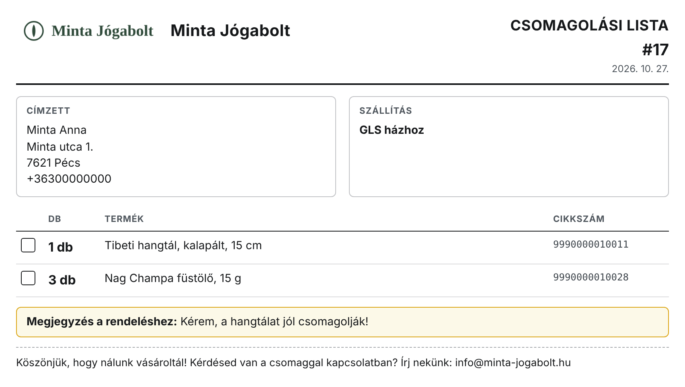
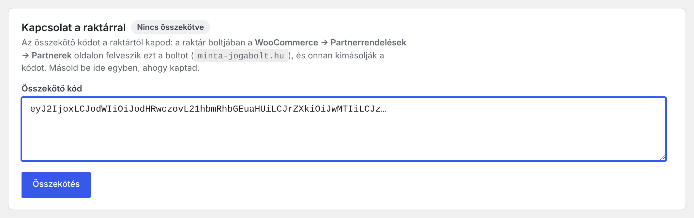
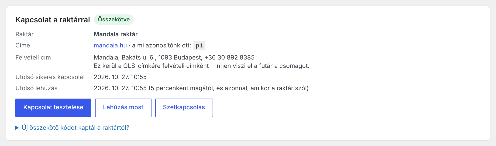
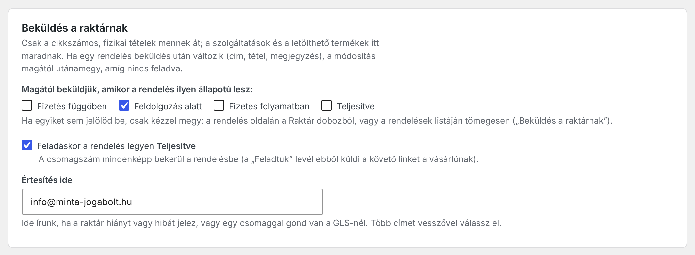
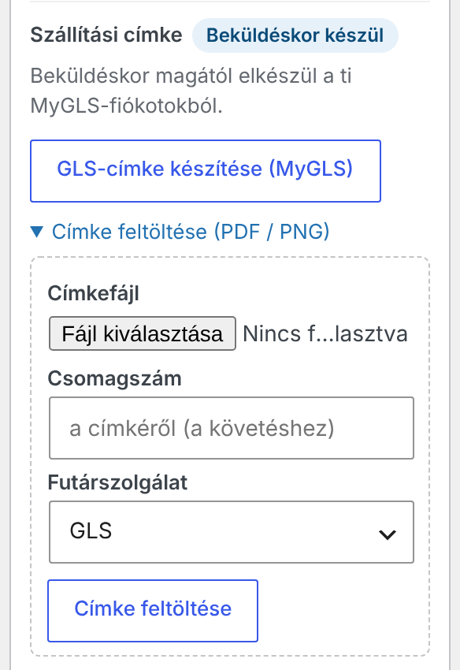
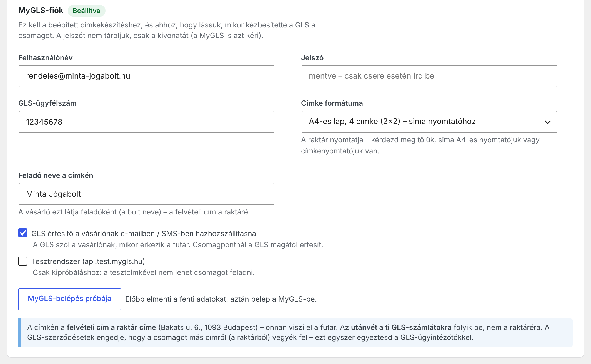
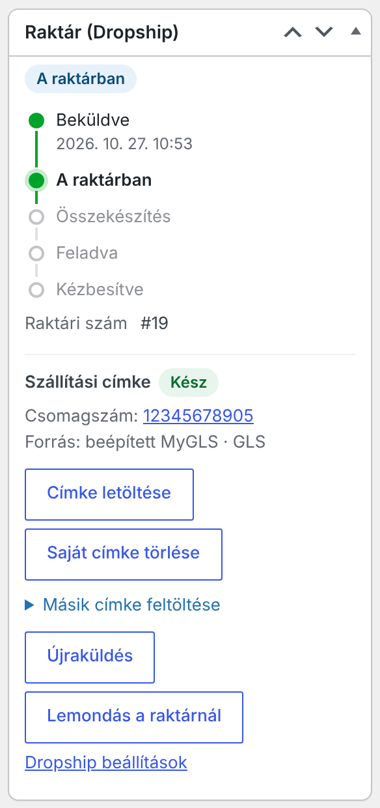
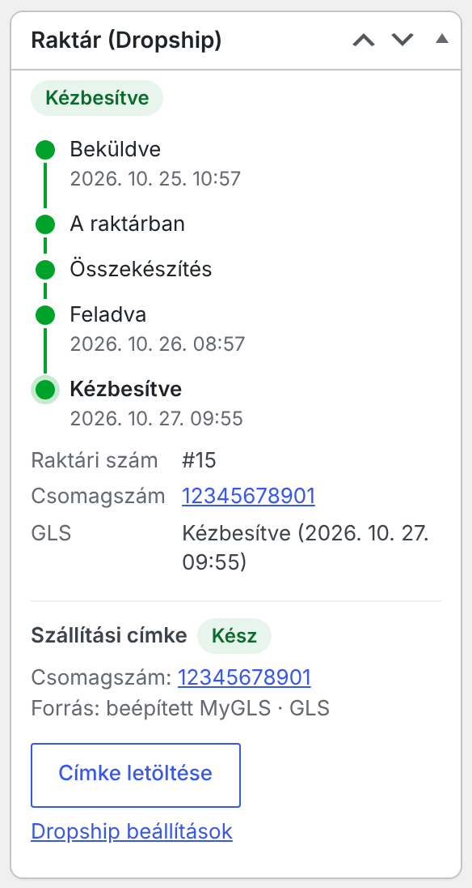
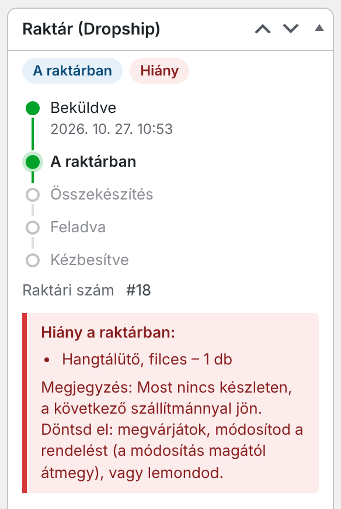

Viszonteladóknak · Útmutató a dropshiphez
A vásárlód a te webshopodban rendel. A rendelés magától átér a raktárunkba, mi összekészítjük, és a te GLS-címkéddel feladjuk. A terméket nagyker áron kapod, a csomagban a te boltod neve áll.
Ebben az útmutatóban lépésről lépésre megmutatjuk, hogyan kötöd össze a boltodat a raktárunkkal, és mi történik egy rendeléssel.
01 · Röviden
Nem neked kell raktáron tartanod, becsomagolnod és futárnak átadnod a terméket. A vásárlód nálad rendel és nálad fizet, a rendelés magától átér hozzánk, mi pedig a te GLS-címkéddel feladjuk neki.
Neked szól, ha WordPress + WooCommerce alapú webshopod van, Mandala-termékeket árulsz benne (vagy szeretnél), és nem akarsz minden rendelésnél csomagolni.
A fizetett vagy utánvétes rendelés – amikor „Feldolgozás alatt” lesz – gombnyomás nélkül átér a raktárunkba. Kézzel is beküldheted.
A csomagolási listán a te boltod neve és logója áll, ár nélkül, a végén a te pár sorod (például köszönet, kuponkód).
Minden rendelésednél ott a Raktár doboz: hol tart a csomag, mi a raktári szám, a csomagszám, van-e hiány.
A címke a te GLS-fiókodból készül. Feladóként a te boltod neve áll rajta, az utánvét a te GLS-számládra folyik be.
?Kérdezd meg tőlünk
Ezeket induláskor egyeztetjük veled:
02 · Így működik
A rendelés a vásárlódtól indul, és hozzá érkezik vissza – közben minden lépésről tudsz.
| A vásárlód | A te boltodat és a boltod leveleit. Ha bekapcsolod, a GLS értesítőjét. A csomagban a te csomagolási listádat – a boltod nevével, ár nélkül. |
| Te | Minden rendelésnél a Raktár (Dropship) dobozt: állapot, raktári szám, csomagszám, hiány. Levelet kapsz, ha hiány, hiba vagy GLS-gond van. |
| Mi, a raktárban | Csak ami a csomaghoz kell: a vásárló neve, címe, telefonszáma, a tételek és a megjegyzése. A vásárló e-mail-címe nem jön át hozzánk. |
| A GLS | A te ügyfélszámodon futó csomagot, felvétellel a raktárunkból. |

03 · Előkészületek
Öt dolog kell az induláshoz. Ha valamelyik még hiányzik, szólj – segítünk.
Erre a fiókra kerülnek a dropship-rendeléseid, nagyker áron. Ha még nincs, jelentkezz a mandala.hu/viszonteladoknak oldalon – 1–2 munkanapon belül visszajelzünk.
Admin hozzáférés kell, hogy bővítményt telepíthess. A tárhelyen PHP 7.4 vagy újabb fusson (a tárhelyszolgáltatód megmondja). A bolt a végleges, átirányítás nélküli címén legyen elérhető – például https://www.boltod.hu –, mert a raktár erre a címre küldi a kéréseit.
A raktár a cikkszám alapján ismeri fel a tételt – ami cikkszám nélkül van, nem jön át. A mandala.hu-n a Fiókom › Viszonteladói felület oldalon az Árlista (CSV) gomb minden termék cikkszámát megadja, a Fotók (ZIP) gombbal pedig kategóriánként, cikkszám szerint elnevezve töltheted le a képeket. Ha egy terméknek több változata van (például méret, szín), minden változatnak legyen saját cikkszáma.
A címke a te GLS-fiókodból készül: a bővítmény beépített MyGLS-kapcsolatával, a Pont bővítménnyel (VP Woo Pont), vagy kézzel feltöltve. A GLS-szerződésed engedje, hogy a futár más címről – a raktárunkból – vegye fel a csomagot. Ezt egyszer egyeztesd a GLS-ügyintéződdel.
Ha a fentiek megvannak, felveszünk partnerként, és kapsz egy összekötő kódot. Ez titkos, mint egy jelszó: ne küldd tovább senkinek. Hogy hogyan adjuk át, induláskor megbeszéljük.
Ezt kérjük tőled a felvételhez: a webshopod pontos címét (https, átirányítás nélkül) · a viszonteladói fiókod e-mail-címét · a kapcsolattartód e-mail-címét · a csomagolási listára a márkanevedet, a logódat és – ha szeretnéd – pár sort a lista aljára (köszönet, kuponkód a következő vásárláshoz, elérhetőség).
04 · Telepítés és összekötés
A képernyőképek egy minta boltban, minta adatokkal készültek – nálad a saját boltod neve és adatai szerepelnek.
Kérd el tőlünk a bővítmény telepítőfájlját (.zip). A WordPressben: Bővítmények › Bővítmény hozzáadása › Bővítmény feltöltése, válaszd ki a fájlt, Telepítés, majd Bővítmény bekapcsolása. A listában ezen a néven látod: HelloProVision Dropship (partnerrendelések a raktárból).
WooCommerce › Dropship (raktár). Ugyanebben a menüben megjelenik egy Partnerrendelések pont is: az a raktár oldala, nálad nincs vele teendő – ott ne kapcsolj be semmit.
04 · Telepítés és összekötés – folytatás

Kattints a Kapcsolat tesztelése gombra. Ha minden rendben, ezt írja: „A raktár válaszol: …”, és megjelenik a raktár felvételi címe – ez kerül a GLS-címkére, innen viszi el a futár a csomagot.


05 · Szállítási címke
A csomagot mi adjuk fel, de a címke a tiéd: a te GLS-szerződéseddel megy. A beállítások Szállítási címke részén választod ki a forrását – az Automatikus a legtöbbször jó.
| Ha… | Válaszd | Mi történik |
|---|---|---|
| a Pont bővítménnyel (VP Woo Pont) már most is GLS-címkét készítesz | Automatikus vagy Pont bővítmény | A címkét továbbra is a Pont bővítménnyel készíted a rendelés oldalán. Magától átmegy a raktárnak – akkor is, ha a beküldés után készül –, a felvételi cím pedig a raktáré lesz. |
| nincs Pont bővítményed, de van MyGLS-fiókod | Automatikus vagy Beépített MyGLS | Beküldéskor magától elkészül a címke a MyGLS-fiókodból – a vásárlás után, így a vásárlónak a pénztárban nem kell várnia. Csak GLS-házhozszállításnál és GLS-csomagpontnál. |
| a MyGLS weboldalán készíted a címkét | Kézi feltöltés | A rendelés oldalán, a Raktár dobozban töltöd fel a címke PDF- vagy PNG-fájlját (legfeljebb 8 MB) a csomagszámmal. A kézzel feltöltött címke mindig elsőbbséget kap. |
Ha egy rendelésnél még nincs címke, attól még átjön: összekészítjük, és amint megérkezik a címke, feladjuk.
?Kérdezd meg tőlünk
Más futárral (MPL, Foxpost, Packeta) szállítasz? A bővítmény ezek címkéjét is fogadja kézi feltöltéssel – hogy a raktárunk ezeket fel tudja-e adni, egyeztessük.

Minden rendelés oldalán, a Raktár (Dropship) dobozban:
Ha a cím vagy az utánvét a címke után változik: a beépített MyGLS-címkét a rendszer törli a GLS-nél is, és újat készít. A Pont bővítménnyel vagy kézzel készült címke „Elavult – új kell” jelzést kap – ezt nem használjuk, készíts újat. Erről levelet is kapsz.
05 · Szállítási címke
A MyGLS-belépés két dologhoz kell: a beépített címkekészítéshez, és ahhoz, hogy lásd, mikor kézbesítette a GLS a csomagot – ez a Pont bővítmény mellett is hasznos. A beállítások Szállítási címke részén add meg.

Kézbesítés: a rendszer 3 óránként megnézi a GLS-nél a feladott csomagokat; amit kézbesítettek, az a Raktár dobozban „Kézbesítve” lesz. Ha a csomag visszafordult, vagy lejárt a csomagponti tárolás, levelet kapsz.
Ha egy címke nem készül el: 15 percenként újrapróbálja, összesen legfeljebb háromszor. Utána a rendelés oldalán jelzi a hibát – javítsd (például a címet vagy a belépést), és készítsd el a gombbal, vagy töltsd fel a címkét.
06 · Egy rendelés a gyakorlatban
Minden rendelésed oldalán, jobb oldalt ott a Raktár (Dropship) doboz. Innen látod, hol tart a csomag, és innen intézel mindent.


| Nincs beküldve | Még nem ment át – például még nincs kifizetve. Fizetett vagy utánvétes rendelést a Beküldés a raktárnak gombbal kézzel is beküldhetsz. |
| Beküldve | Elküldte a boltod, a raktár még nem rögzítette. |
| A raktárban | Megérkezett, raktári számot kapott. |
| Összekészítés | Kinyomtattuk a csomagolási listát, csomagoljuk. |
| Feladva | Átadtuk a GLS-nek. A csomagszám bekerül a rendelésbe, és – ha a beállításban így hagytad – a rendelés „Teljesítve” lesz. |
| Kézbesítve | A GLS szerint a vásárló átvette (ehhez kell a MyGLS-belépés a beállításokban). |
| Hiány | Valami nincs raktáron – te döntesz, mi legyen (következő oldal). |
| Lemondás folyamatban Lemondva | Lemondtad, a raktár még nem válaszolt. Töröltük, nem adjuk fel. |
| Hiba | A raktár nem tudta rögzíteni – például egyik cikkszámot sem ismeri. Levelet is kapsz. |
06 · Egy rendelés a gyakorlatban
Ha a beküldés után a címet, a tételeket vagy a megjegyzést módosítod, a változás magától utánunk jön, amíg nem adtuk fel. Ha minden raktári tételt kiveszel, az lemondásnak számít.
Jelezzük a dobozban, és levelet kapsz „[Raktár] Hiány a raktárban – #…” tárggyal. Te döntesz: megvárjátok, módosítod a rendelést (a módosítás magától átmegy), vagy lemondod.

A Raktár dobozban kattints a Lemondás a raktárnál gombra – vagy állítsd a rendelést „Visszamondva” / „Visszatérítve” állapotra, akkor magától megy.
Feladáskor a csomagszám követő linkkel bekerül a Raktár dobozba, a rendelés pedig „Teljesítve” lesz, így a vásárló megkapja a boltod szokásos levelét a teljesített rendelésről. Ebben a levélben a csomagszám magától nincs benne: ha a beépített MyGLS-t használod és bekapcsoltad a GLS értesítőt, a GLS küldi el neki. Ha a vásárló rákérdez, a Raktár dobozból kimásolhatod.
07 · Gyakori kérdések
Általában percen belül: a boltod szól a raktárnak, az pedig azonnal lekéri. Ha ez egyszer elmarad, 5 percenként mindkét oldal magától is ellenőriz.
A rendelések listáján a Raktár oszlopban, és a Dropship (raktár) oldal alján, a Legutóbbi raktári rendelések táblázatban.
Igen, a Készletfigyelés bekapcsolásával. Óránként összeveti a cikkszámos termékeidet a raktárral: ami nálunk elfogyott, nálad „Nincs készleten” lesz; ahol darabszámot kezelsz, a raktár darabszáma lesz.
A Dropship (raktár) oldalon nyisd le az Új összekötő kódot kaptál a raktártól? részt, másold be, és kattints az Összekötés az új kóddal gombra. A régi kód azonnal érvénytelen.
Ez a levél csak a Mandala-témával futó boltokban megy ki magától. Más boltban a vásárló a szokásos levelet kapja a teljesített rendelésről, és – ha bekapcsoltad – a GLS értesítőjét.
Ha a bolt nem éri el a raktárt, a WooCommerce-oldalak tetején piros sáv is jelzi. Nyomd meg a Kapcsolat tesztelése gombot. Ha továbbra is hibát ír, hívj minket, és mondd el, mit látsz.
?Kérdezd meg tőlünk – induláskor ezeket beszéljük át
Az első rendelés előtt egyeztessünk egy próbát: így együtt nézzük meg, hogy a rendelés és a címke rendben átjön.
Szeretettel: a Mandala csapata